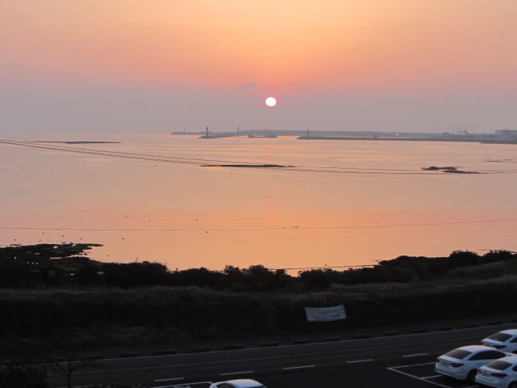
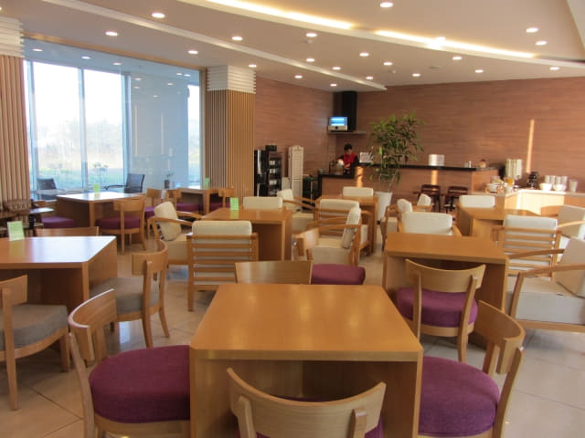
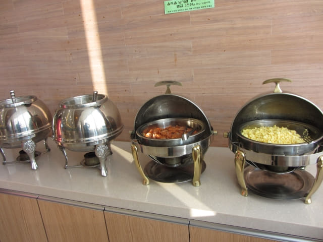
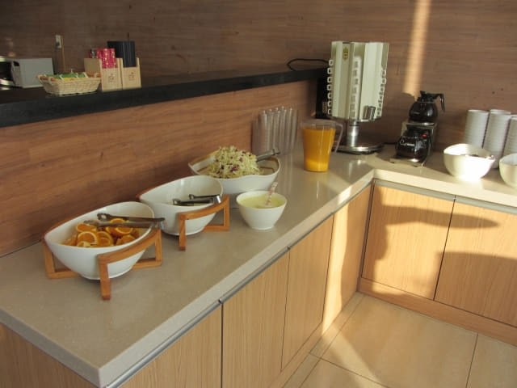

我們在濟州島城山下榻 美麗度假村 (아름다운리조트 Areumdaun Resort), 住宿了兩晚。美麗度假村位於海邊的別墅式酒店, 房間非常寬敞舒適, 可看到無敵大海景, 環境相當寧靜優美, 酒店服務員可用英語溝通, 而且連免費豐富中西式自助早餐, 是我們十分推薦的酒店。
我們是 Agoda 聯合行銷夥伴, 請支持背包客網持續下去, 歡迎大家透過以下鏈結預訂西歸浦 M-STAY Hotel Jeju 酒店、濟州島或韓國其他地方的酒店。
城山美麗度假村 位置地圖
從濟州市、西歸浦 往 城山美麗度假村, 可乘701號巴士前往, 在「오조해녀의집」巴士站下車, 沿海邊(日出海岸)步道一直走便是, 路線十分簡單。

濟州島城山美麗度假村外貌。

濟州島城山美麗度假村的房間非常寬敞舒適, 可看到無敵大海景。

房間內的一角還設有迷你酒吧。
寬闊陽台可看到無盡大海、日出海岸、城山港及城山日出峰, 景色十分壯麗。

早上陽台外優美日出景色。


我們是 Agoda 聯合行銷夥伴, 請支持背包客網持續下去, 歡迎大家透過以下鏈結預訂西歸浦 M-STAY Hotel Jeju 酒店、濟州島或韓國其他地方的酒店。
濟州島城山美麗度假村大堂。
濟州島城山美麗度假村餐廳面積很大, 清潔光亮, 環境一流。早餐十分豐富。



